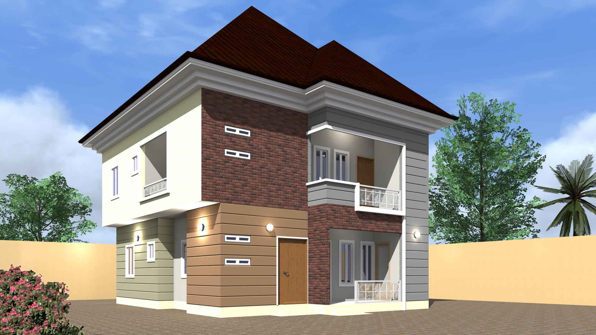

Land of Evidence

"Happiness does not depend on the size of the house but the attitude of the family members".
We are a very happy family living together happily with lots of love and fun.
Our house may not have a lot of luxury but we feel very comfortable and safe here.
No wonder my Mum gave our family the name LAND OF EVIDENCE.
About the Legend
A home is a place where our heart is. We all love to be with our family and it is only possible when we are living with our family.
Today I am going to share all about my home.
👉🏿 My home is located in Umuajameze, Umumopara, Abia State. It was built by my grandfather which was later inherited by my father who is the first son. Although my father has a building that he erected by himself, maintaining his inheritance was still important to him.
👉🏿 But now it has been the most important place in the country. Our building is a duplex. We occupy all the rooms. I love staying in the old building
because it is positioned in such a way that I can have a good view of everything happening around and I comfortably stay there to work.
👉🏿 It was designed and built in the 80's by a very good architect and the building structure was one of the best of that age but the building pattern is
old-fashioned now. We repaint the house ceremonially and that is why it still looks fine but needs a total renovation.
👉🏿 My Dad saw the need for renovation and invited an architect to discuss the project. The architect gave him a very beautiful design which suits this age. An agreement was reached with the contractor.
👉🏿 On Wednesday 10th October 2022, the renovation process began with the removal of the roof of the building.
👉🏿 The plan is to finish up the new building before the end of 2023.
👉🏿 We all will miss the old building because of its epic look which makes it stand out among every other
modern building around it.